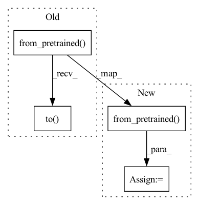

Pattern ID :17385
Before Change
if memory_saving_sd_config:
self.vae = AutoencoderKL.from_pretrained(model_key, subfolder="vae", torch_dtype=torch.float16).to(self.device)
self.tokenizer = CLIPTokenizer.from_pretrained(model_key, subfolder="tokenizer", torch_dtype=torch.float16)
self.text_encoder = CLIPTextModel.from_pretrained(model_key, subfolder="text_encoder", torch_dtype=torch.float16).to( self.device)
self.unet = UNet2DConditionModel.from_pretrained(model_key, subfolder="unet", torch_dtype=torch.float16).to(self.device)
self.unet.set_attention_slice("auto")
else:
self.vae = AutoencoderKL.from_pretrained(model_key, subfolder="vae").to(self.device)After Change
// Create model
if vram_O > 0:
pipe = StableDiffusionPipeline.from_pretrained( model_key, torch_dtype=torch.float16)
if vram_O > 1:
pipe.enable_sequential_cpu_offload()
pipe.enable_attention_slicing(1)
self.vae = pipe.vae
self.tokenizer = pipe.tokenizer
self.text_encoder = pipe.text_encoder
self.unet = pipe.unet
self.scheduler = DDIMScheduler.from_pretrained(model_key, subfolder="scheduler", torch_dtype=torch.float16)
else:In pattern: SUPERPATTERN
Frequency: 3
Non-data size: 4
Instances Fragment ID: 57705092
Project Name: ashawkey/stable-dreamfusion
Commit Name: 97fc370fc729823548a248b6bd93e8b87d01c74f
Time: 2023-03-21
Author: tobben@fastmail.fm
File Name: sd.py
M Class Name: StableDiffusion
N Class Name: StableDiffusion
M Method Name: __init__(5)
N Method Name: __init__(5)
M Parent Class: nn.Module
N Parent Class: nn.Module
M File Name: sd.py
N File Name: sd.py
M Start Line: 39
M End Line: 72
N Start Line: 57
N End Line: 72
Before Change
@unittest.skipIf(torch_device == "cpu", "Stable diffusion is supposed to run on GPU")
def test_stable_diffusion(self):
// make sure here that pndm scheduler skips prk
sd_pipe = StableDiffusionPipeline.from_pretrained("CompVis/stable-diffusion-v1-1").to( torch_device)
prompt = "A painting of a squirrel eating a burger"
generator = torch.Generator(device=torch_device).manual_seed(0)
with torch.autocast("cuda"):After Change
@unittest.skipIf(torch_device == "cpu", "Stable diffusion is supposed to run on GPU")
def test_stable_diffusion(self):
// make sure here that pndm scheduler skips prk
sd_pipe = StableDiffusionPipeline.from_pretrained( "CompVis/stable-diffusion-v1-1", use_auth_token=True)
sd_pipe = sd_pipe.to(torch_device)
prompt = "A painting of a squirrel eating a burger"
generator = torch.Generator(device=torch_device).manual_seed(0) Fragment ID: 57705094
Project Name: huggingface/diffusers
Commit Name: ab7857019a438958a0c5c891c22439e1c9de9ec4
Time: 2022-08-31
Author: anton@huggingface.co
File Name: tests/test_pipelines.py
M Class Name: PipelineTesterMixin
N Class Name: PipelineTesterMixin
M Method Name: test_stable_diffusion(1)
N Method Name: test_stable_diffusion(1)
M Parent Class: unittest.TestCase
N Parent Class: unittest.TestCase
M File Name: tests/test_pipelines.py
N File Name: tests/test_pipelines.py
M Start Line: 278
M End Line: 278
N Start Line: 278
N End Line: 279
Before Change
@slow
@unittest.skipIf(torch_device == "cpu", "Stable diffusion is supposed to run on GPU")
def test_stable_diffusion_fast_ddim(self):
sd_pipe = StableDiffusionPipeline.from_pretrained("CompVis/stable-diffusion-v1-1").to( torch_device)
scheduler = DDIMScheduler(
beta_start=0.00085,
beta_end=0.012,After Change
@slow
@unittest.skipIf(torch_device == "cpu", "Stable diffusion is supposed to run on GPU")
def test_stable_diffusion_fast_ddim(self):
sd_pipe = StableDiffusionPipeline.from_pretrained( "CompVis/stable-diffusion-v1-1", use_auth_token=True)
sd_pipe = sd_pipe.to(torch_device)
scheduler = DDIMScheduler(
beta_start=0.00085, Fragment ID: 57705097
Project Name: huggingface/diffusers
Commit Name: ab7857019a438958a0c5c891c22439e1c9de9ec4
Time: 2022-08-31
Author: anton@huggingface.co
File Name: tests/test_pipelines.py
M Class Name: PipelineTesterMixin
N Class Name: PipelineTesterMixin
M Method Name: test_stable_diffusion_fast_ddim(1)
N Method Name: test_stable_diffusion_fast_ddim(1)
M Parent Class: unittest.TestCase
N Parent Class: unittest.TestCase
M File Name: tests/test_pipelines.py
N File Name: tests/test_pipelines.py
M Start Line: 298
M End Line: 298
N Start Line: 299
N End Line: 300